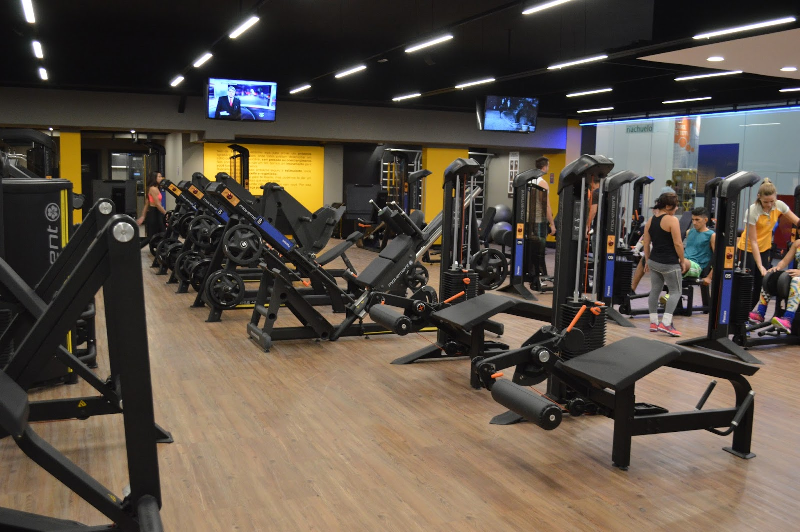

Sobre Nós
Na Academia USCS, acreditamos que um ambiente acolhedor e inclusivo
é essencial para o sucesso de cada membro. Nossa equipe dedicada
está sempre pronta para receber você de braços abertos, fornecendo o
apoio necessário em cada etapa do seu caminho. Aqui, você encontrará
uma comunidade de pessoas com objetivos semelhantes, prontas para
compartilhar suas experiências e motivar umas às outras. Além disso,
oferecemos uma ampla gama de programas e serviços adicionais para
aprimorar sua jornada de bem-estar.
De nutricionistas a fisioterapeutas, estamos comprometidos em
fornecer os recursos necessários para garantir que você alcance seus
objetivos com segurança e eficiência.
Estamos muito orgulhosos de tudo o que conquistamos como Academia
Invictus, mas nosso verdadeiro sucesso se mede pelos sorrisos e
transformações que testemunhamos diariamente. Seja qual for o seu
objetivo, estamos aqui para ajudar você a se tornar a melhor versão
de si mesmo.

Nosso espaço é dedicado ao seu bem-estar e à sua saúde! Aqui, temos o compromisso de oferecer uma experiência única de treinamento, com equipamentos de ponta que vão elevar seus resultados a um novo patamar. Nossas máquinas de última geração foram cuidadosamente selecionadas para proporcionar o máximo conforto, segurança e eficiência durante seus treinos. Desde esteiras e bicicletas ergométricas até aparelhos de musculação com ajustes personalizados, cada detalhe foi pensado para garantir que você alcance seus objetivos de forma eficaz. Além dos equipamentos de ponta, temos orgulho em contar com uma equipe de profissionais altamente qualificados, prontos para oferecer todo o suporte necessário. Nossos personal trainers e instrutores especializados estão à disposição para orientar e ajudar você em cada etapa do seu percurso fitness. Com suas habilidades e conhecimentos, eles vão garantir que você execute os exercícios corretamente, evitando lesões e maximizando seus resultados. Aqui na nossa academia, também valorizamos a diversidade de modalidades de treinamento. Temos aulas de grupo emocionantes, como spinning, zumba, pilates e yoga, que vão tornar seus treinos ainda mais motivadores e prazerosos. Se você busca um treinamento mais intenso, oferecemos opções como treinos funcionais e de alta intensidade. Com tantas escolhas, você encontrará atividades que sejam compatíveis com seus interesses e objetivos, garantindo que cada visita seja única e gratificante.
Na nossa academia, seu conforto e bem-estar são prioridades. Além dos equipamentos de ponta e da equipe qualificada, investimos em uma infraestrutura completa para tornar sua experiência ainda mais agradável. Nossas instalações contam com salas amplas e climatizadas, vestiários equipados, áreas de descanso e até mesmo um espaço de convivência onde você pode relaxar e socializar com outros membros. Tudo foi cuidadosamente pensado para que você se sinta acolhido e motivado em cada visita. Valorizamos a segurança dos nossos clientes, por isso, seguimos rigorosos protocolos de limpeza e higiene. Nossa academia está equipada com sistemas de ventilação eficientes e oferecemos álcool em gel em vários pontos do espaço. Assim, você pode treinar com tranquilidade, sabendo que estamos comprometidos em criar um ambiente seguro e saudável para todos. Aqui na nossa academia, acreditamos no poder da diversidade e em atender às diferentes necessidades e preferências dos nossos membros. Além das aulas de grupo e treinos intensos, oferecemos programas de treinamento personalizados, desenvolvidos de acordo com seus objetivos individuais. Nossa missão é ajudar você a alcançar seus resultados desejados, seja em busca de condicionamento físico, perda de peso, ganho de massa muscular ou simplesmente uma vida mais saudável. Venha fazer parte da nossa academia e descubra como podemos transformar sua jornada fitness em uma experiência excepcional. Junte-se a nós e descubra todo o potencial que você possui para conquistar